2nd Wind
Spring 2026
Brand Identity, Packaging, Web Design
View Full Deck (opens in a new tab) | View Live Site (opens in a new tab)
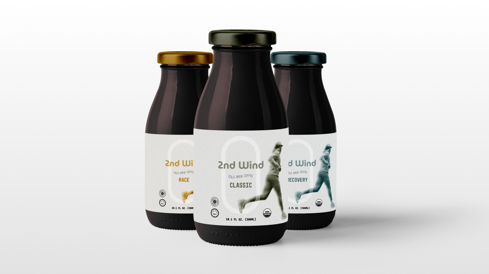

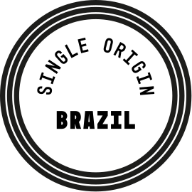
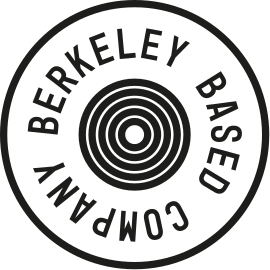
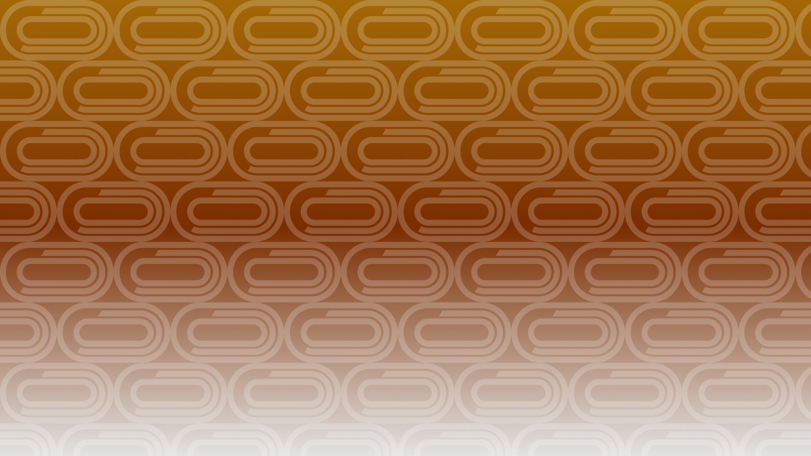

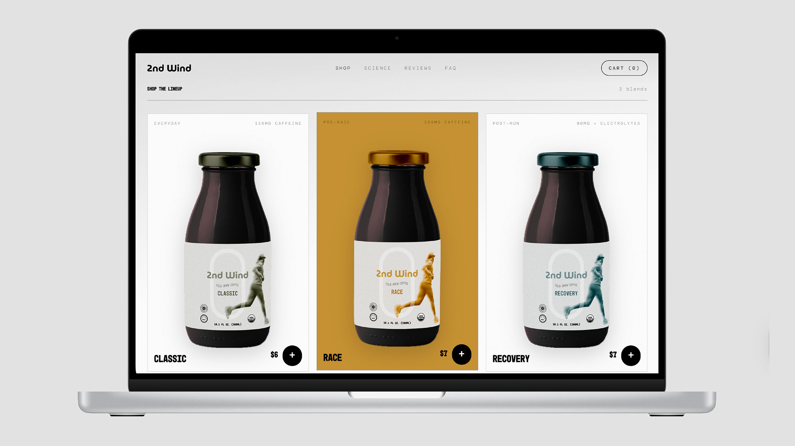
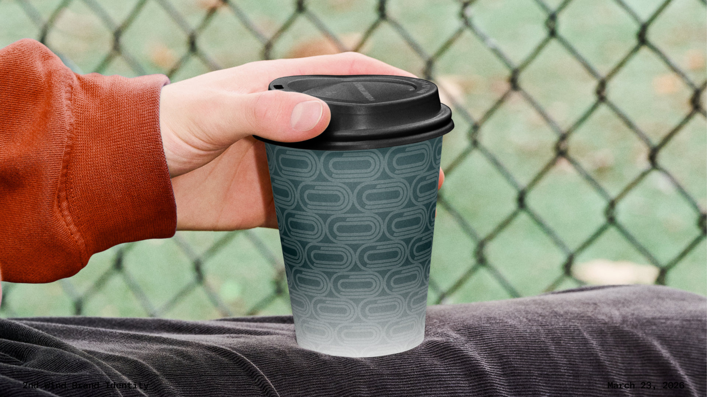
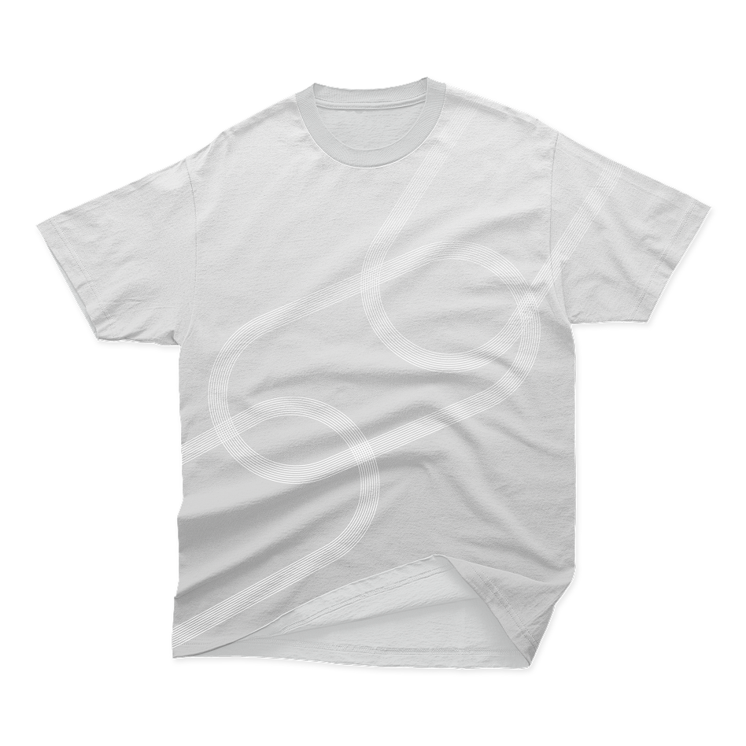
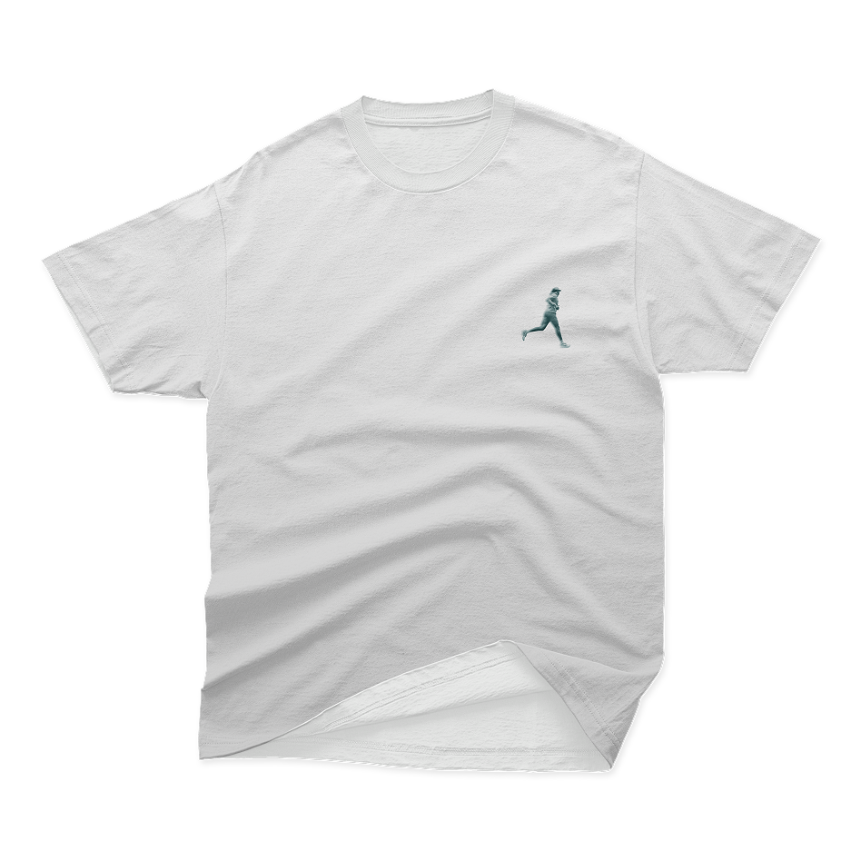
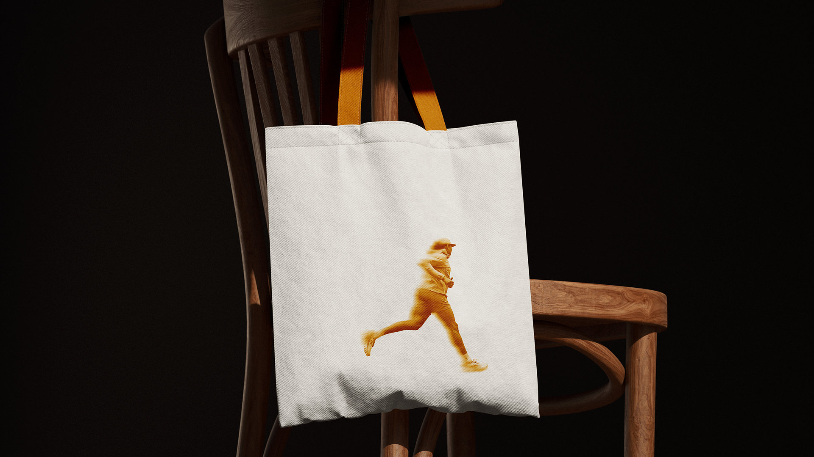
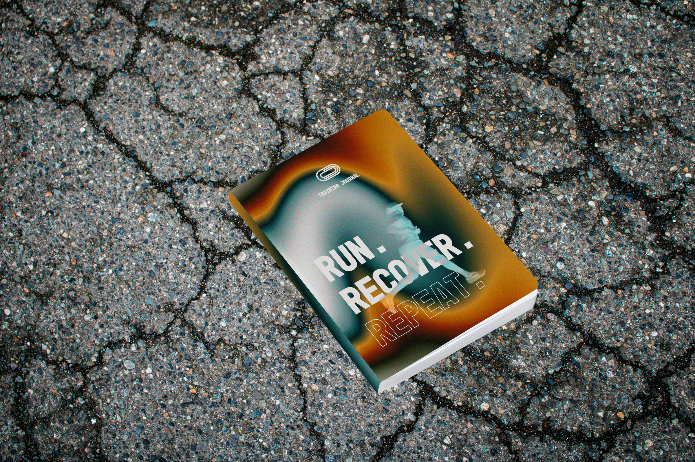
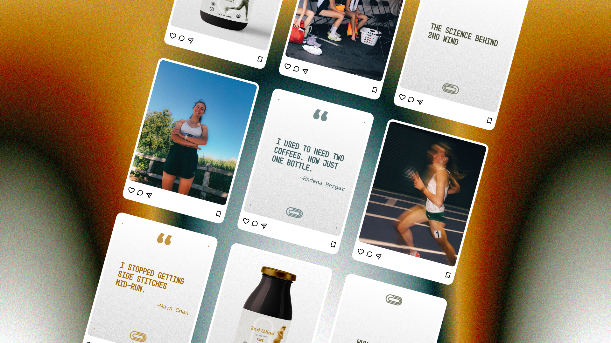
Concept
2nd Wind is an organic cold brew built for runners. Each bottle is low in acid and high in caffeine, and sized for one drink before or after a run. The brand is made for people who track their splits and don't want a heavy stomach at the start line.
Brand Identity
The mark is a running track seen from above, made of three stacked oval lanes. The wordmark uses a numeric 2 so it stays tight at small sizes. Display type is set in Mono45 Headline, with Adapter Mono PE Variable running underneath as the body face. The palette pairs Black and Off White with three accents named Trail, Ice Bath, and Golden Hour, each tied to one of the three product variants.
Applications
Three bottles share a single label structure and switch colour by variant: Classic, Race, and Recovery. The same system carries onto apparel, coffee cups, social, and a website.